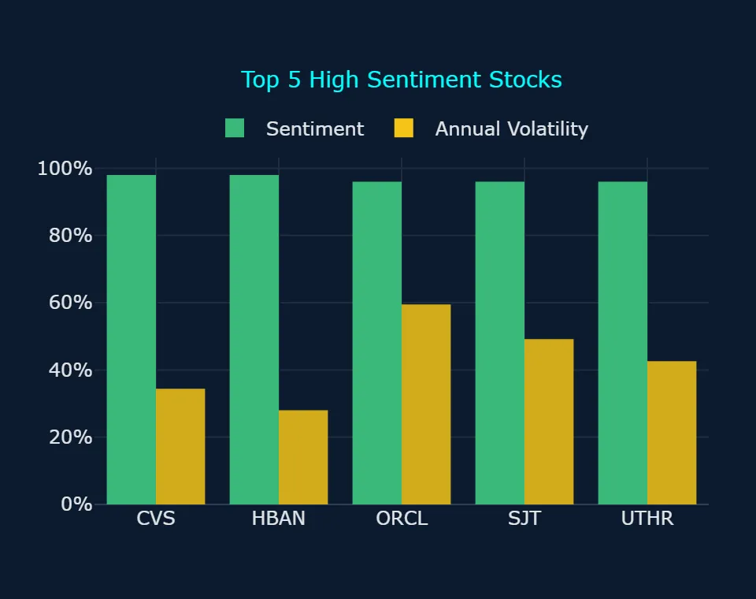
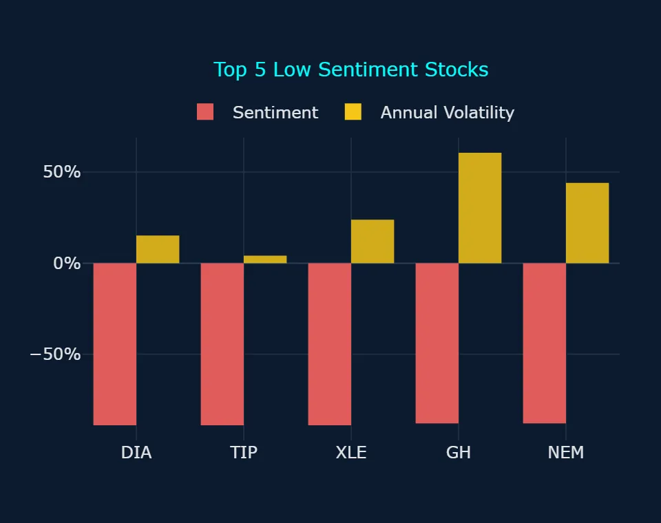
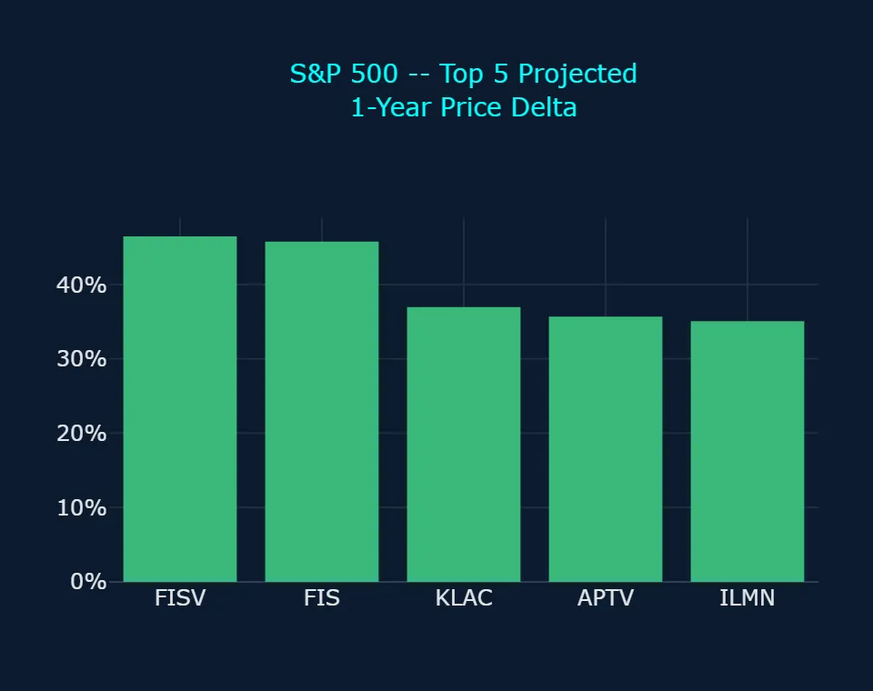
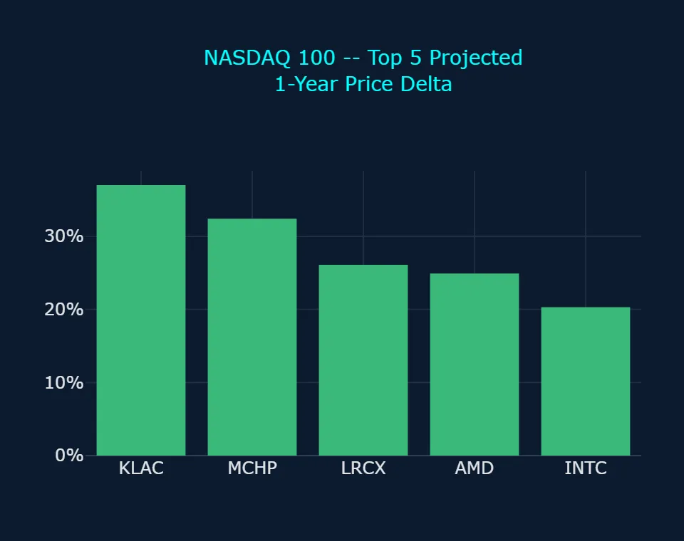
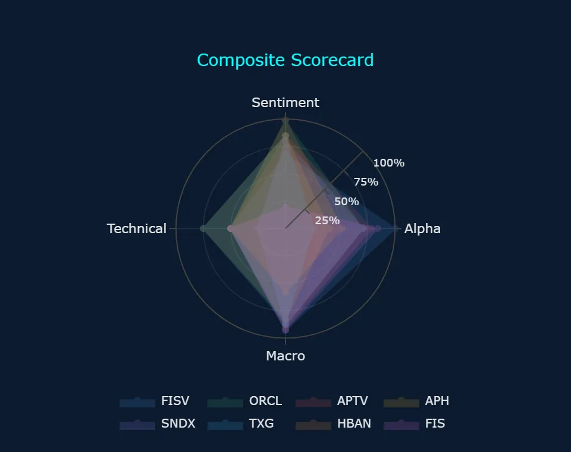
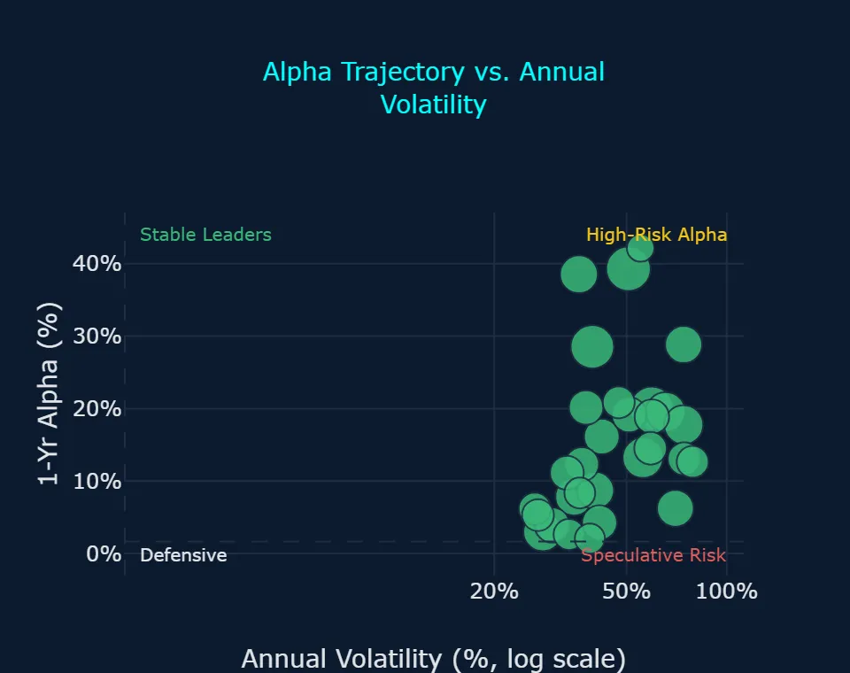
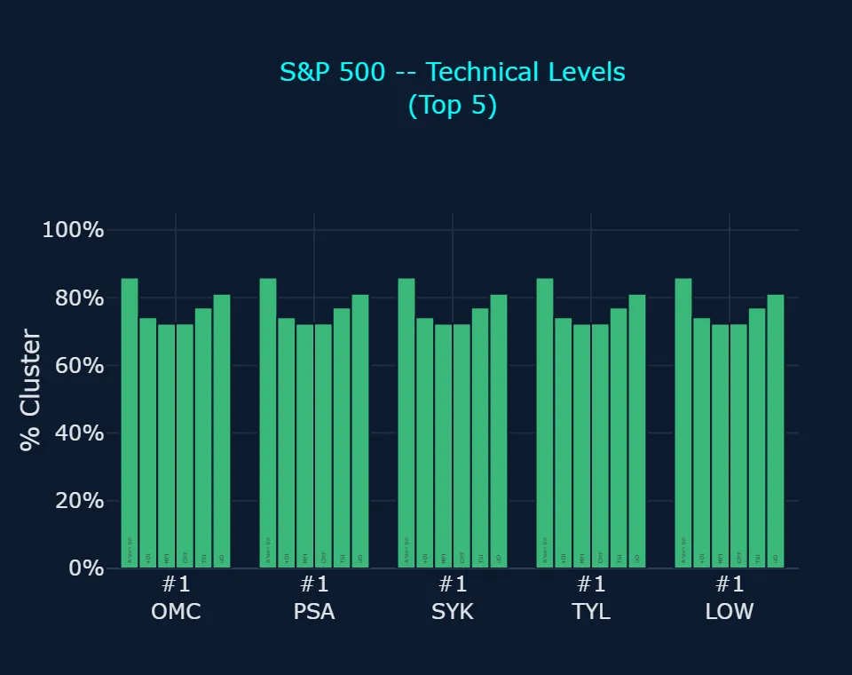
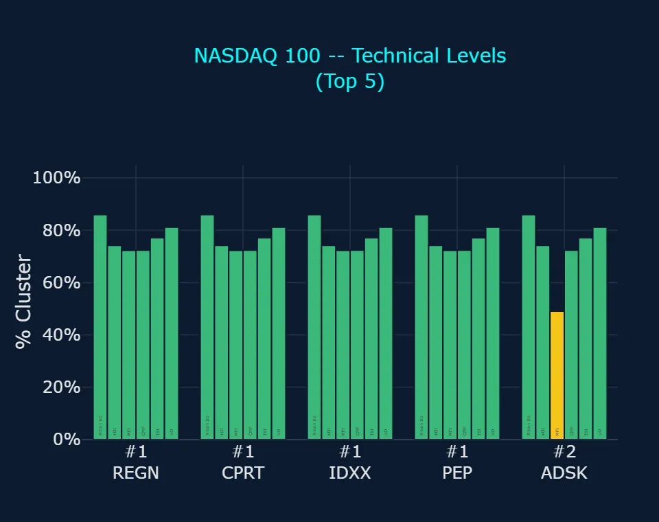
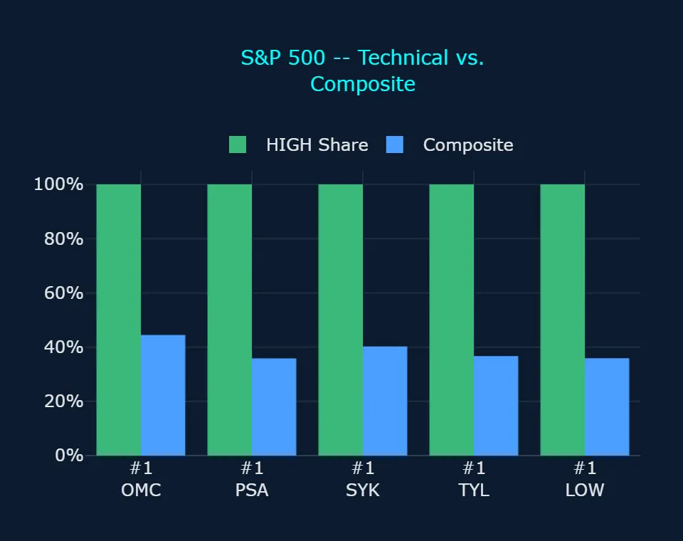
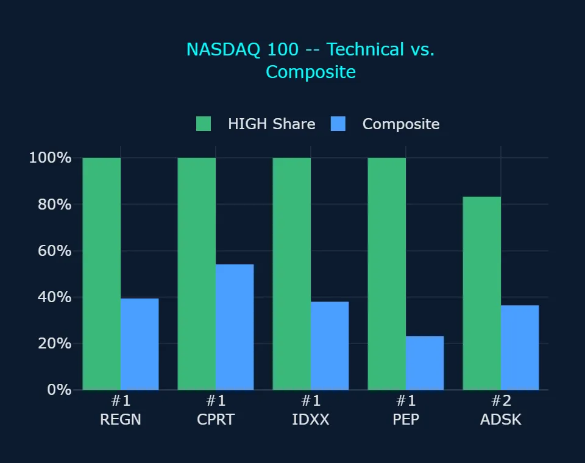

Zoonova AI: Pre-Market Quantitative Briefing – November 10, 2026
Session Quantitative Briefing: The Zoonova AI Intelligence Engine executes a hybrid architecture combining a proprietary Quad-Ensemble machine learning framework with Google Gemini Flash for real-time contextual synthesis and semantic macroeconomic grounding. The quantitative pipeline integrates four specialized estimators: Random Forest Regressor (RFR) for baseline structural stability, eXtreme Gradient Boosting (XGB) optimized for residual loss minimization, Categorical Boosting (CAT) for high-cardinality categorical signal processing, and Temporal Fusion Transformer (TFT) for multi-horizon price and volatility forecasting.
Zoonova AI: Pre-Market Momentum & Liquidity Report
1. QUANTITATIVE MODEL OVERVIEW & SIGNAL METRICS
The Zoonova AI Command Center utilizes a Quad-Ensemble predictive framework comprising Random Forest Regressor [RFR], eXtreme Gradient Boosting [XGB], Categorical Boosting [CAT], and Temporal Fusion Transformer [TFT] to generate forward price targets and alpha probabilities. Market sentiment scoring is governed by VADER linguistic modeling, while BIRCH clustering evaluates systemic anomaly detection and multi-asset breadth distributions. This multi-layered architecture synthesizes statistical cross-asset relationships to identify institutional capital rotations and underlying regime shifts.
- SPDR S&P 500 ETF Trust (SPY) closed at $752.69 on 2026-11-09 with negative sentiment of -65.0% and annualized volatility of 16.88%, while multi-model forecasts project an advance to $807.00 by 2027-11-01, representing an implied gain of +7.2% (Zoonova, 2026-11-09).
- Invesco QQQ Trust Series 1 (QQQ) concluded at $679.35 with negative sentiment of -65.0% and annualized volatility of 22.61%, supported by a 1-year alpha forecast of +8.49% that targets $786.07 by 2027-11-01 for an implied gain of +15.7% (Zoonova, 2026-11-09).
- SPDR Dow Jones Industrial Average ETF (DIA) closed at $523.33 with negative sentiment of -89.0% and annualized volatility of 15.21%, projecting a moderate 1-year target of $544.26 (+4.0%), while Vanguard Total Bond Market ETF (BND) closed at $71.62 with neutral sentiment of 0.0% and annualized volatility of 4.39%, targeting $76.23 (+6.4%) (Zoonova, 2026-11-09).
- SPDR Gold Shares ETF (GLD) registered a close of $379.53 on 2026-11-09 with negative sentiment of -29.0% and annualized volatility of 24.67%, with long-term projections indicating a steady advance to $396.44 by 2027-11-01 (+4.5%) (Zoonova, 2026-11-09).
- Systemic breadth modeling through BIRCH clustering registered an overwhelming bullish bias across the broader market, identifying 12 names (11 stocks, 1 ETF) at moderate severity and 95 names (64 stocks, 31 ETFs) at low severity, compared to bearish signals registered in 3 stocks at moderate severity and 31 names (26 stocks, 5 ETFs) at low severity (Zoonova, 2026-11-09).
2. SENTIMENT INSIGHTS – TOP 5 HIGH & LOW
Top 5 High Sentiment Stocks
| Ticker | Company Name | Sentiment Score | Primary Catalyst / Driver |
|---|---|---|---|
| CVS | CVS Health Corp | +98.0% | CVS Health Corporation reported third-quarter 2026 adjusted EPS of $2.09, beating analyst estimates, and raised its full-year earnings guidance following margin improvements in healthcare benefits (PR Newswire, 2026-11-04). |
| HBAN | Huntington Bancshares, Inc. | +98.0% | Huntington Bancshares Incorporated expanded its digital operating ecosystem and launched an automated treasury platform to drive regional deposit liquidity (Huntington Bancshares, 2026-11-05). |
| ORCL | Oracle Corp. | +96.0% | Oracle Corporation reaffirmed long-term operational targets at its Investor Day presentation, projecting durable cloud infrastructure demand to offset near-term financing pressures (Barchart, 2026-11-04). |
| SJT | San Juan Basin Royalty Trust | +96.0% | San Juan Basin Royalty Trust generated speculative trading interest surrounding potential operator accounting reconciliations despite Argent Trust Company declaring no monthly cash distribution for October 2026 due to excess production costs (PR Newswire, 2026-10-20). |
| UTHR | United Therapeutics Corp | +96.0% | United Therapeutics Corporation posted record third-quarter 2026 revenue of $832.5 million driven by 13% growth in Tyvaso DPI and expanded its share repurchase authorization by $2 billion (Business Wire, 2026-11-04). |
Top 5 Low Sentiment Stocks
| Ticker | Company Name | Sentiment Score | Primary Friction / Risk Factor |
|---|---|---|---|
| DIA* | SPDR Dow Jones Industrial Average ETF | -89.0% | SPDR Dow Jones Industrial Average ETF experienced negative sentiment as post-election industrial momentum stalled below prior record highs amid lingering macroeconomic caution ahead of key labor data (24/7 Wall St., 2026-11-05). |
| TIP* | iShares TIPS Bond ETF | -89.0% | iShares TIPS Bond ETF faced persistent headwinds from elevated nominal Treasury yields and a reduced monthly distribution payout of $0.1612 per share (Tipswatch, 2026-11-08). |
| XLE* | The Energy Select Sector SPDR Fund | -89.0% | The Energy Select Sector SPDR Fund declined sharply under pressure from tumbling crude oil benchmarks and projected multi-year global supply surpluses (ETF Action, 2026-11-05). |
| GH | Guardant Health Inc | -88.0% | Guardant Health Inc dropped after increasing its projected full-year 2026 free cash flow burn to between $205 million and $220 million despite delivering 36% third-quarter revenue growth (Investing.com, 2026-11-05). |
| NEM | Newmont Corp | -88.0% | Newmont Corporation fell as softening commodity pricing and insider executive share sales overshadowed third-quarter free cash flow of $1.91 billion (MarketBeat, 2026-11-10). |
* ETF (exchange-traded fund)
3. ALPHA PROBABILITY & PRICE DELTA LEADERBOARD – 1-YEAR HORIZON
S&P 500 – Top 5 High Alpha Probability (1yr)
| Ticker | Current Price ($) | 1-Yr Target Price ($) | Alpha Probability (%) | Implied Excess Alpha (%) | 10%+ Alpha? |
|---|---|---|---|---|---|
| FISV | $63.52 | $93.06 | 93.79% | 39.29% | Both Yes |
| FIS | $28.34 | $41.31 | 78.83% | 38.53% | Both Yes |
| APTV | $39.91 | $54.17 | 73.42% | 28.53% | Both Yes |
| CSGP | $31.24 | $38.54 | 70.41% | 16.15% | Both Yes |
| ORCL | $119.79 | $152.42 | 66.15% | 20.02% | Both Yes |
S&P 500 – Top 5 Price Delta + % Change (1yr)
| Ticker | Current Price ($) | 1-Yr Target Price ($) | Absolute Delta ($) | Projected 1-Yr % Change (%) | Implied Excess Alpha (%) |
|---|---|---|---|---|---|
| FISV | $63.52 | $93.06 | $29.54 | 46.51% | 39.29% |
| FIS | $28.34 | $41.31 | $12.97 | 45.77% | 38.53% |
| KLAC | $151.38 | $207.38 | $56.00 | 36.99% | 29.77% |
| APTV | $39.91 | $54.17 | $14.26 | 35.73% | 28.53% |
| ILMN | $220.78 | $298.25 | $77.47 | 35.09% | 27.88% |
NASDAQ 100 – Top 5 High Alpha Probability (1yr)
| Ticker | Current Price ($) | 1-Yr Target Price ($) | Alpha Probability (%) | Implied Excess Alpha (%) | 10%+ Alpha? |
|---|---|---|---|---|---|
| PYPL | $60.05 | $69.60 | 60.07% | 8.70% | Split |
| CPRT | $32.45 | $36.07 | 52.45% | 3.93% | Split |
| NFLX | $63.95 | $73.57 | 31.59% | 7.84% | Both No |
| PDD | $80.50 | $87.97 | 27.06% | 2.06% | Both No |
| MRVL | $154.60 | $185.32 | 23.15% | 12.66% | Split |
NASDAQ 100 – Top 5 Price Delta + % Change (1yr)
| Ticker | Current Price ($) | 1-Yr Target Price ($) | Absolute Delta ($) | Projected 1-Yr % Change (%) | Implied Excess Alpha (%) |
|---|---|---|---|---|---|
| KLAC | $151.38 | $207.38 | $56.00 | 36.99% | 29.77% |
| MCHP | $61.49 | $81.41 | $19.92 | 32.40% | 25.16% |
| LRCX | $221.31 | $279.06 | $57.75 | 26.09% | 18.88% |
| AMD | $508.58 | $635.30 | $126.72 | 24.92% | 17.70% |
| INTC | $59.37 | $71.41 | $12.04 | 20.28% | 13.07% |
4. REAL-TIME CONTEXTUAL ENRICHMENT
Macroeconomic conditions heading into the 2026-11-10 session reflect a distinct bifurcation across asset classes following the recent congressional midterm elections and subsequent monetary policy assessments. Equity markets experienced an initial relief rally after legislative clarity emerged, yet persistent nominal Treasury yields and softening commodity benchmarks continue to generate crosscurrents. The Energy Select Sector SPDR Fund (XLE) tumbled sharply amid a broad decline in crude oil benchmarks and concerns regarding structural supply surpluses through 2027 (ETF Action, 2026-11-05). Concurrently, fixed-income sentiment remains defensive, as the iShares TIPS Bond ETF (TIP) contends with real yield adjustments and reduced monthly distribution rates (Tipswatch, 2026-11-08). Despite headline index sentiment registering negative across major benchmarks on 2026-11-09, including -65.0% for both SPDR S&P 500 ETF Trust (SPY) and Invesco QQQ Trust Series 1 (QQQ), underlying breadth indicates widespread underlying accumulation as BIRCH clustering confirmed bullish trend anomalies across 107 total names (Zoonova, 2026-11-09).
Corporate fundamental catalysts reinforce this divergence, particularly among high-sentiment leaders and high-alpha candidates. CVS Health Corporation surged in sentiment to +98.0% after reporting third-quarter adjusted EPS of $2.09 and increasing full-year 2026 earnings projections on the back of healthcare margin recovery (PR Newswire, 2026-11-04). In high-alpha institutional opportunities, Fiserv, Inc. (FISV) stands as the top-ranked constituent on the Main Scorecard with an Alpha Rating of 100.0, Sentiment Rating of 68.0, Technical Signal of 50.0, Macro Alignment of 92.8, and Composite of 78.1, where both models expect it to beat the benchmark by 10%+ supported by a 93.79% 1-year alpha probability and a projected price of $93.06 against its $63.52 close (Zoonova, 2026-11-09). Fiserv demonstrated operational stabilization in third-quarter results while expanding its Project Elevate efficiency savings target to $1 billion (GlobeNewswire, 2026-11-03). Conversely, Fidelity National Information Services, Inc. (FIS) illustrates valuation disparity; despite carrying an Alpha Rating of 84.0 and where both models expect it to beat the benchmark by 10%+ with a 78.83% probability and projected 1-year price of $41.31 from $28.34, near-term sentiment remains depressed at a Sentiment Rating of 19.5 after management trimmed fiscal 2026 outlook due to client conversion timing (Business Wire, 2026-11-04).
Within technology and large-cap growth, the Tech Stock Scorecard reveals significant dispersion away from legacy mega-caps toward specialized enablers. Meta Platforms Inc leads the Tech Stock Scorecard with a Composite of 55.4, Sentiment Rating of 96.5, and Macro Alignment of 79.2, though the two models split on whether it can clear the 10%+ alpha hurdle (Zoonova, 2026-11-09). Advanced Micro Devices Inc (AMD) registered a Bullish Short-Term (3d) Trend Anomaly, supported by a Technical Signal of 75.0, Macro Alignment of 85.8, and a projected 1-year alpha of +17.70% targeting $635.30 from $508.58, where the two models split (Zoonova, 2026-11-09). In contrast, NVIDIA Corp (NVDA) reflects institutional caution with a Composite of 36.6, Technical Signal of 25.0, a Bearish Long-Term (1w) Trend Anomaly, and where neither model expects 10%+ outperformance (Zoonova, 2026-11-09). This rotation aligns with broader capital reallocation, where high-capex infrastructure names like Oracle Corporation face balance sheet scrutiny following a $20 billion debt and equity offering, even as multi-model ensembles project long-term price targets of $152.42 against a $119.79 close (Barchart, 2026-11-04; Zoonova, 2026-11-09).
5. ANOMALY DETECTION SCANNER
Direction: Bearish
Moderate Severity (3 stocks)
- ACAD – Acadia Pharmaceuticals Inc: Bearish Short-Term (3d) Trend Anomaly, Bearish Long-Term (1w) Trend Anomaly
- ARWR – Arrowhead Pharmaceuticals Inc.: Bearish Short-Term (3d) Trend Anomaly, Bearish Long-Term (1w) Trend Anomaly
- IONS – Ionis Pharmaceuticals Inc: Bearish Short-Term (3d) Trend Anomaly, Bearish Long-Term (1w) Trend Anomaly
Low Severity (31 names: 26 stocks, 5 ETFs)
- ARQT – Arcutis Biotherapeutics Inc: Bearish Long-Term (1w) Trend Anomaly
- CMI – Cummins Inc.: Bearish Long-Term (1w) Trend Anomaly
- DDOG – Datadog Inc: Bearish Long-Term (1w) Trend Anomaly
- EFV* – iShares MSCI EAFE Value ETF: Bearish Long-Term (1w) Trend Anomaly
- EXPE – Expedia Group Inc: Bearish Long-Term (1w) Trend Anomaly
- HALO – Halozyme Therapeutics Inc.: Bearish Long-Term (1w) Trend Anomaly
- IBRX – ImmunityBio Inc: Bearish Short-Term (3d) Trend Anomaly
- KEX – Kirby Corp.: Bearish Long-Term (1w) Trend Anomaly
- KMI – Kinder Morgan Inc: Bearish Long-Term (1w) Trend Anomaly
- MCHP – Microchip Technology, Inc.: Bearish Long-Term (1w) Trend Anomaly
- MTUM* – iShares MSCI USA Momentum Factor ETF: Bearish Long-Term (1w) Trend Anomaly
- NRIX – Nurix Therapeutics Inc: Bearish Long-Term (1w) Trend Anomaly
- NTRA – Natera Inc: Bearish Long-Term (1w) Trend Anomaly
- NUE – Nucor Corp.: Bearish Long-Term (1w) Trend Anomaly
- NVDA – NVIDIA Corp: Bearish Long-Term (1w) Trend Anomaly
- NWS – News Corp: Bearish Long-Term (1w) Trend Anomaly
- NWSA – News Corp: Bearish Long-Term (1w) Trend Anomaly
- PBYI – Puma Biotechnology Inc: Bearish Long-Term (1w) Trend Anomaly
- PSX – Phillips 66: Bearish Long-Term (1w) Trend Anomaly
- QUAL* – iShares MSCI USA Quality Factor ETF: Bearish Long-Term (1w) Trend Anomaly
- RIGL – Rigel Pharmaceuticals: Bearish Long-Term (1w) Trend Anomaly
- ROK – Rockwell Automation Inc: Bearish Long-Term (1w) Trend Anomaly
- SNDX – Syndax Pharmaceuticals Inc: Bearish Long-Term (1w) Trend Anomaly
- SRE – Sempra: Bearish Long-Term (1w) Trend Anomaly
- TRMB – Trimble Inc: Bearish Long-Term (1w) Trend Anomaly
- URGN – UroGen Pharma Ltd: Bearish Long-Term (1w) Trend Anomaly
- VCYT – Veracyte Inc: Bearish Long-Term (1w) Trend Anomaly
- VDE* – Vanguard Energy ETF: Bearish Long-Term (1w) Trend Anomaly
- VLO – Valero Energy Corp.: Bearish Long-Term (1w) Trend Anomaly
- XLE* – The Energy Select Sector SPDR Fund: Bearish Long-Term (1w) Trend Anomaly
- XOM – Exxon Mobil Corp.: Bearish Long-Term (1w) Trend Anomaly
Direction: Bullish
Moderate Severity (12 names: 11 stocks, 1 ETF)
- ADPT – Adaptive Biotechnologies Corp: Bullish Short-Term (3d) Trend Anomaly, Bullish Long-Term (1w) Trend Anomaly
- AIR – AAR Corp.: Bullish Short-Term (3d) Trend Anomaly, Bullish Long-Term (1w) Trend Anomaly
- ANET – Arista Networks Inc: Bullish Short-Term (3d) Trend Anomaly, Bullish Long-Term (1w) Trend Anomaly
- CDE – Coeur Mining Inc: Bullish Short-Term (3d) Trend Anomaly, Bullish Long-Term (1w) Trend Anomaly
- GDX* – VanEck Gold Miners ETF: Bullish Short-Term (3d) Trend Anomaly, Bullish Long-Term (1w) Trend Anomaly
- GE – GE Aerospace: Bullish Short-Term (3d) Trend Anomaly, Bullish Long-Term (1w) Trend Anomaly
- IMVT – Immunovant Inc: Bullish Short-Term (3d) Trend Anomaly, Bullish Long-Term (1w) Trend Anomaly
- MPWR – Monolithic Power System Inc: Bullish Short-Term (3d) Trend Anomaly, Bullish Long-Term (1w) Trend Anomaly
- MRNA – Moderna Inc: Bullish Short-Term (3d) Trend Anomaly, Bullish Long-Term (1w) Trend Anomaly
- RVMD – Revolution Medicines Inc: Bullish Short-Term (3d) Trend Anomaly, Bullish Long-Term (1w) Trend Anomaly
- SRRK – Scholar Rock Holding Corp: Bullish Short-Term (3d) Trend Anomaly, Bullish Long-Term (1w) Trend Anomaly
- XNCR – Xencor Inc: Bullish Short-Term (3d) Trend Anomaly, Bullish Long-Term (1w) Trend Anomaly
Low Severity (95 names: 64 stocks, 31 ETFs)
- ACWI* – iShares MSCI ACWI ETF: Bullish Short-Term (3d) Trend Anomaly
- ADI – Analog Devices Inc.: Bullish Short-Term (3d) Trend Anomaly
- AMAT – Applied Materials Inc.: Bullish Short-Term (3d) Trend Anomaly
- AMD – Advanced Micro Devices Inc.: Bullish Short-Term (3d) Trend Anomaly
- AME – Ametek Inc: Bullish Short-Term (3d) Trend Anomaly
- APH – Amphenol Corp.: Bullish Short-Term (3d) Trend Anomaly
- ARKQ* – ARK Autonomous Technology & Robotics ETF: Bullish Short-Term (3d) Trend Anomaly
- ASML – ASML Holding NV: Bullish Short-Term (3d) Trend Anomaly
- AVGO – Broadcom Inc: Bullish Short-Term (3d) Trend Anomaly
- BBIO – BridgeBio Pharma Inc: Bullish Short-Term (3d) Trend Anomaly
- BRKR – Bruker Corp: Bullish Short-Term (3d) Trend Anomaly
- CAT – Caterpillar Inc.: Bullish Short-Term (3d) Trend Anomaly
- CEG – Constellation Energy Corporation: Bullish Short-Term (3d) Trend Anomaly
- COGT – Cogent Biosciences Inc: Bullish Short-Term (3d) Trend Anomaly
- CRWD – Crowdstrike Holdings Inc: Bullish Short-Term (3d) Trend Anomaly
- CSCO – Cisco Systems, Inc.: Bullish Short-Term (3d) Trend Anomaly
- DAL – Delta Air Lines, Inc.: Bullish Long-Term (1w) Trend Anomaly
- DOV – Dover Corp.: Bullish Short-Term (3d) Trend Anomaly
- EFA* – iShares MSCI EAFE ETF: Bullish Short-Term (3d) Trend Anomaly
- ESGU* – iShares Trust iShares ESG Aware MSCI USA ETF: Bullish Short-Term (3d) Trend Anomaly
- ESLT – Elbit Systems Ltd.: Bullish Short-Term (3d) Trend Anomaly
- ETN – Eaton Corporation plc: Bullish Short-Term (3d) Trend Anomaly
- EW – Edwards Lifesciences Corp: Bullish Long-Term (1w) Trend Anomaly
- FLGT – Fulgent Genetics Inc: Bullish Long-Term (1w) Trend Anomaly
- GH – Guardant Health Inc: Bullish Short-Term (3d) Trend Anomaly
- GS – Goldman Sachs Group, Inc.: Bullish Short-Term (3d) Trend Anomaly
- HII – Huntington Ingalls Industries Inc: Bullish Short-Term (3d) Trend Anomaly
- HWM – Howmet Aerospace Inc: Bullish Short-Term (3d) Trend Anomaly
- IEFA* – iShares Core MSCI EAFE ETF: Bullish Short-Term (3d) Trend Anomaly
- IEMG* – iShares Core MSCI Emerging Markets ETF: Bullish Short-Term (3d) Trend Anomaly
- ITOT* – iShares Core S&P Total U.S. Stock Market ETF: Bullish Short-Term (3d) Trend Anomaly
- IVV* – iShares Core S&P 500 ETF: Bullish Short-Term (3d) Trend Anomaly
- IVZ – Invesco Ltd: Bullish Short-Term (3d) Trend Anomaly
- IWB* – iShares Russell 1000 ETF: Bullish Short-Term (3d) Trend Anomaly
- IWP* – iShares Russell Mid-Cap Growth ETF: Bullish Short-Term (3d) Trend Anomaly
- IXUS* – iShares Core MSCI Total International Stock ETF: Bullish Short-Term (3d) Trend Anomaly
- J – Jacobs Solutions Inc: Bullish Short-Term (3d) Trend Anomaly
- JCI – Johnson Controls International plc: Bullish Short-Term (3d) Trend Anomaly
- KEYS – Keysight Technologies Inc: Bullish Short-Term (3d) Trend Anomaly
- KLAC – KLA Corp.: Bullish Short-Term (3d) Trend Anomaly
- LHX – L3Harris Technologies Inc: Bullish Short-Term (3d) Trend Anomaly
- LRCX – Lam Research Corp.: Bullish Short-Term (3d) Trend Anomaly
- MDGL – Madrigal Pharmaceuticals Inc: Bullish Short-Term (3d) Trend Anomaly
- NDSN – Nordson Corp.: Bullish Short-Term (3d) Trend Anomaly
- NEM – Newmont Corp: Bullish Long-Term (1w) Trend Anomaly
- NET – Cloudflare Inc: Bullish Short-Term (3d) Trend Anomaly
- NRG – NRG Energy Inc.: Bullish Short-Term (3d) Trend Anomaly
- PANW – Palo Alto Networks Inc: Bullish Short-Term (3d) Trend Anomaly
- PFG – Principal Financial Group Inc: Bullish Short-Term (3d) Trend Anomaly
- PH – Parker-Hannifin Corp.: Bullish Short-Term (3d) Trend Anomaly
- PLTR – Palantir Technologies Inc: Bullish Short-Term (3d) Trend Anomaly
- PWR – Quanta Services, Inc.: Bullish Short-Term (3d) Trend Anomaly
- PZG – Paramount Gold Nevada Corp: Bullish Short-Term (3d) Trend Anomaly
- QQQ* – Invesco QQQ Trust Series 1: Bullish Short-Term (3d) Trend Anomaly
- R – Ryder System, Inc.: Bullish Short-Term (3d) Trend Anomaly
- RL – Ralph Lauren Corp: Bullish Short-Term (3d) Trend Anomaly
- RTX – RTX Corp: Bullish Short-Term (3d) Trend Anomaly
- RYTM – Rhythm Pharmaceuticals Inc.: Bullish Long-Term (1w) Trend Anomaly
- SCCO – Southern Copper Corporation: Bullish Short-Term (3d) Trend Anomaly
- SCHB* – Schwab U.S. Broad Market ETF: Bullish Short-Term (3d) Trend Anomaly
- SCHF* – Schwab International Equity ETF: Bullish Short-Term (3d) Trend Anomaly
- SCHX* – Schwab U.S. Large-Cap ETF: Bullish Short-Term (3d) Trend Anomaly
- SDGR – Schrodinger Inc: Bullish Short-Term (3d) Trend Anomaly
- SPY* – SPDR S&P 500 ETF Trust: Bullish Short-Term (3d) Trend Anomaly
- STE – Steris Plc: Bullish Long-Term (1w) Trend Anomaly
- STT – State Street Corp.: Bullish Short-Term (3d) Trend Anomaly
- TDY – Teledyne Technologies Inc: Bullish Short-Term (3d) Trend Anomaly
- TEL – TE Connectivity plc: Bullish Short-Term (3d) Trend Anomaly
- TER – Teradyne, Inc.: Bullish Short-Term (3d) Trend Anomaly
- TPR – Tapestry Inc: Bullish Long-Term (1w) Trend Anomaly
- TT – Trane Technologies plc: Bullish Short-Term (3d) Trend Anomaly
- TWST – Twist Bioscience Corp: Bullish Short-Term (3d) Trend Anomaly
- TXG – 10x Genomics Inc: Bullish Short-Term (3d) Trend Anomaly
- TXN – Texas Instruments Inc.: Bullish Short-Term (3d) Trend Anomaly
- U – Unity Software Inc: Bullish Long-Term (1w) Trend Anomaly
- UAL – United Airlines Holdings Inc: Bullish Short-Term (3d) Trend Anomaly
- URI – United Rentals, Inc.: Bullish Short-Term (3d) Trend Anomaly
- UTHR – United Therapeutics Corp: Bullish Short-Term (3d) Trend Anomaly
- VEA* – Vanguard FTSE Developed Markets ETF: Bullish Short-Term (3d) Trend Anomaly
- VEU* – Vanguard FTSE All-World ex-US ETF: Bullish Short-Term (3d) Trend Anomaly
- VGK* – Vanguard FTSE Europe ETF: Bullish Short-Term (3d) Trend Anomaly
- VLUE* – iShares MSCI USA Value Factor ETF: Bullish Short-Term (3d) Trend Anomaly
- VO* – Vanguard Mid-Cap ETF: Bullish Short-Term (3d) Trend Anomaly
- VOO* – Vanguard S&P 500 ETF: Bullish Short-Term (3d) Trend Anomaly
- VT* – Vanguard Total World Stock ETF: Bullish Short-Term (3d) Trend Anomaly
- VTI* – Vanguard Total Stock Market ETF: Bullish Short-Term (3d) Trend Anomaly
- VV* – Vanguard Large Cap ETF: Bullish Short-Term (3d) Trend Anomaly
- VXF* – Vanguard Extended Market Index ETF: Bullish Short-Term (3d) Trend Anomaly
- VXUS* – Vanguard Total International Stock ETF: Bullish Short-Term (3d) Trend Anomaly
- VYM* – Vanguard High Dividend Yield Indx ETF: Bullish Short-Term (3d) Trend Anomaly
- WAB – Westinghouse Air Brake Technologies Corp: Bullish Short-Term (3d) Trend Anomaly
- XLC* – Communication Services Select Sector SPDR Fund: Bullish Long-Term (1w) Trend Anomaly
- XLI* – Industrial Select Sector SPDR: Bullish Short-Term (3d) Trend Anomaly
- XLK* – Technology Select Sector SPDR ETF: Bullish Short-Term (3d) Trend Anomaly
- ZBH – Zimmer Biomet Holdings Inc: Bullish Long-Term (1w) Trend Anomaly
Direction: Mixed
Moderate Severity (10 stocks)
- GLW – Corning, Inc.: Bullish Short-Term (3d) Trend Anomaly, Bearish Long-Term (1w) Trend Anomaly
- HPE – Hewlett Packard Enterprise Co: Bullish Short-Term (3d) Trend Anomaly, Bearish Long-Term (1w) Trend Anomaly
- LMT – Lockheed Martin Corp.: Bullish Short-Term (3d) Trend Anomaly, Bearish Long-Term (1w) Trend Anomaly
- MPC – Marathon Petroleum Corp: Bullish Short-Term (3d) Trend Anomaly, Bearish Long-Term (1w) Trend Anomaly
- MRVL – Marvell Technology Inc: Bullish Short-Term (3d) Trend Anomaly, Bearish Long-Term (1w) Trend Anomaly
- MU – Micron Technology Inc.: Bullish Short-Term (3d) Trend Anomaly, Bearish Long-Term (1w) Trend Anomaly
- NTAP – Netapp Inc: Bullish Short-Term (3d) Trend Anomaly, Bearish Long-Term (1w) Trend Anomaly
- STX – Seagate Technology Holdings Plc: Bullish Short-Term (3d) Trend Anomaly, Bearish Long-Term (1w) Trend Anomaly
- WDC – Western Digital Corp.: Bullish Short-Term (3d) Trend Anomaly, Bearish Long-Term (1w) Trend Anomaly
- WMB – Williams Cos Inc: Bullish Short-Term (3d) Trend Anomaly, Bearish Long-Term (1w) Trend Anomaly
* ETF (exchange-traded fund)
6. STRATEGIC INVESTMENT ASSESSMENT
- Overweight high-composite fintech infrastructure and enterprise software leaders where multi-model ensembles align on outperformance, prioritizing Fiserv, Inc. (Composite 78.1, Alpha Rating 100.0) and Aptiv PLC (Composite 75.5, Alpha Rating 78.3) where both models expect them to beat the benchmark by 10%+ (Zoonova, 2026-11-09).
- Exploit sentiment-to-alpha divergences in institutional turnaround candidates such as Fidelity National Information Services, Inc. (Alpha Rating 84.0, Macro Alignment 92.6), where short-term negative sentiment contrasts with a 78.83% probability of beating the benchmark by 10%+ and a +38.53% 1-year alpha forecast (Zoonova, 2026-11-09).
- Underweight traditional cyclical energy and fixed-income inflation hedges, maintaining defensive posture on The Energy Select Sector SPDR Fund and iShares TIPS Bond ETF given negative sentiment of -89.0% and persistent commodity demand headwinds (Zoonova, 2026-11-09; ETF Action, 2026-11-05).
- Exercise selective exposure within mega-cap technology by favoring names with confirmed short-term bullish trend anomalies like Advanced Micro Devices Inc (+17.70% 1-year alpha forecast) while trimming exposure in names registering bearish weekly trend anomalies such as NVIDIA Corp (Composite 36.6, Technical Signal 25.0) where neither model expects 10%+ outperformance (Zoonova, 2026-11-09).
7. STOCK SCORECARD
Main Scorecard
| Ticker | Composite (%) | Alpha Rating | 10%+ Alpha? | Projected 1-Yr Change (%) | Street Consensus (Upside) | Next Earnings | Sentiment Rating | Technical Signal | Macro Alignment | Anomaly Flag | Catalyst / Risk | Market Cap | EPS Revisions (30d) | Short Interest / DTC | Options Flow | Earnings Surprise (4Q) | Bias |
|---|---|---|---|---|---|---|---|---|---|---|---|---|---|---|---|---|---|
| FISV | 78.1% | 100.0 | Both Yes | +46.5% | Hold (-7.8%) | 2027-02-09 | 68.0 | 50.0 | 92.8 | None | Cost Restructuring Operating Leverage | $33.5B | Upward (+1.7%) | 3.1% / 2.2 DTC | Bullish (Call Skew) | 3/4 Beats (+1.5% avg) | Bullish |
| ORCL | 75.8% | 70.5 | Both Yes | +27.2% | Buy (+109.5%) | 2026-12-09 (in 29d) | 98.0 | 50.0 | 88.2 | None | Cloud Capex Capital Expansion | $362.2B | Downward (-2.1%) | 2.6% / 1.7 DTC | Neutral / Mixed | 4/4 Beats (+23.2% avg) | Bullish |
| APTV | 75.5% | 78.3 | Both Yes | +35.7% | Buy (+62.6%) | 2027-02-10 | 85.0 | 50.0 | 91.2 | None | Non Auto Business Growth | $8.0B | Downward (-6.2%) | 4.5% / 3.4 DTC | Bullish (Call Skew) | 4/4 Beats (+7.2% avg) | Bullish |
| APH | 68.4% | 39.6 | Split | +20.4% | Strong Buy (+34.4%) | 2027-01-27 | 84.5 | 75.0 | 83.0 | Bullish (3d) | Datacom Connector Record Demand | $184.2B | Upward (+9.6%) | 1.8% / 1.5 DTC | Bullish (Call Skew) | 4/4 Beats (+9.9% avg) | Bullish |
| SNDX | 65.2% | 70.7 | Both Yes | +26.7% | Strong Buy (+275.9%) | 2027-03-04 | 80.5 | 25.0 | 88.0 | Bearish (1w) | Revuforj Commercial Rollout Momentum | $858.9M | Neutral/Flat (0.0%) | 9.2% / 4.1 DTC | Unusual Volume Detected | 2/4 Beats | Bullish |
| TXG | 64.6% | 24.9 | Split | +25.0% | Hold (+21.1%) | 2027-02-12 | 84.5 | 75.0 | 86.2 | Bullish (3d) | Atera Platform Commercial Launch | $7.7B | Downward (-2.5%) | 8.4% / 3.8 DTC | Bullish (Call Skew) | 2/4 Beats | Neutral |
| HBAN | 64.2% | 51.3 | Both No | +10.2% | Buy (+18.7%) | 2027-01-22 | 99.0 | 50.0 | 57.9 | None | Intelligent Treasury Integration | $31.5B | Downward (-4.9%) | 2.5% / 1.8 DTC | Bearish (Put Heavy) | 3/4 Beats (-1.2% avg) | Neutral |
| FIS | 61.1% | 84.0 | Both Yes | +45.8% | Hold (+42.6%) | 2027-02-22 | 19.5 | 50.0 | 92.6 | None | Full Year Guidance Reduction | $14.8B | Downward (-8.4%) | 3.6% / 2.7 DTC | Bearish (Put Heavy) | 3/4 Beats (+0.8% avg) | Bearish |
| NFLX | 60.3% | 33.7 | Both No | +15.0% | Buy (+25.1%) | 2027-01-21 | 92.0 | 50.0 | 73.3 | None | Ad Tier Margin Guidance | $260.4B | Downward (-5.1%) | 2.1% / 1.9 DTC | Neutral / Mixed | 3/4 Beats (+6.5% avg) | Neutral |
| PYPL | 59.4% | 64.0 | Split | +15.9% | Hold (+3.6%) | 2027-01-26 | 50.0 | 50.0 | 75.7 | None | Branded Checkout Growth Deceleration | $49.2B | Downward (-1.5%) | 3.8% / 2.5 DTC | Neutral / Mixed | 3/4 Beats (+3.4% avg) | Neutral |
| U | 59.1% | 40.8 | Split | +36.0% | Buy (+15.0%) | 2027-02-19 | 39.5 | 75.0 | 91.3 | Bullish (1w) | Vector Engine Monetization Growth | $22.9B | Upward (+14.2%) | 6.7% / 3.2 DTC | Bullish (Call Skew) | 3/4 Beats (+12.0% avg) | Bearish |
| CDE | 58.3% | 23.2 | Both No | +13.5% | Buy (+32.3%) | 2027-02-17 | 50.0 | 100.0 | 69.3 | Bullish (3d/1w) | Precious Metals Exploration Spend | $15.8B | Downward (-12.0%) | 4.8% / 2.9 DTC | Bullish (Call Skew) | 2/4 Beats | Neutral |
| CSGP | 55.0% | 75.1 | Both Yes | +23.4% | Buy (+14.8%) | 2027-02-18 | 12.0 | 50.0 | 85.0 | None | Residential Network Expansion | $12.3B | Downward (-2.8%) | 4.2% / 3.6 DTC | Neutral / Mixed | 3/4 Beats (+8.4% avg) | Bearish |
| CPRT | 54.1% | 55.9 | Split | +11.2% | Buy (+20.2%) | 2026-11-19 (in 9d) | 50.0 | 50.0 | 61.8 | None | Salvage Auction Buyer Expansion | $29.6B | Downward (-1.2%) | 2.7% / 2.8 DTC | Neutral / Mixed | 3/4 Beats (+2.1% avg) | Neutral |
| ESLT | 53.8% | 22.6 | Both No | +11.5% | Buy (+16.6%) | 2026-11-24 (in 14d) | 62.5 | 75.0 | 63.1 | Bullish (3d) | Artillery Training Center Contract | $33.9B | Upward (+6.8%) | 1.2% / 2.1 DTC | Bullish (Call Skew) | 4/4 Beats (+6.9% avg) | Neutral |
| TRMB | 50.6% | 16.0 | Split | +18.4% | Buy (+42.6%) | 2027-02-11 | 94.0 | 25.0 | 80.4 | Bearish (1w) | Guidance Reset Field Softness | $12.7B | Downward (-3.2%) | 2.8% / 2.3 DTC | Bearish (Put Heavy) | 3/4 Beats (+4.1% avg) | Neutral |
| GLW | 47.2% | 47.0 | Split | +21.7% | Buy (+40.9%) | 2027-01-27 | 15.5 | 50.0 | 83.7 | Bullish (3d), Bearish (1w) | Optical Infrastructure Demand Surge | $99.9B | Downward (-1.8%) | 2.9% / 2.4 DTC | Bullish (Call Skew) | 4/4 Beats (+5.6% avg) | Bearish |
| ROK | 43.7% | 12.2 | Both No | +9.8% | Hold (+12.5%) | 2027-02-04 | 91.0 | 25.0 | 55.3 | Bearish (1w) | Tariff Refund Guidance Boost | $43.2B | Upward (+4.2%) | 3.4% / 3.1 DTC | Neutral / Mixed | 3/4 Beats (+2.8% avg) | Neutral |
| ARKQ* | 42.9% | 16.0 | Both No | +15.6% | N/A (ETF) | N/A (ETF) | 17.5 | 75.0 | 74.9 | Bullish (3d) | Autonomous Mobility Rebound | $1.7B | N/A (ETF) | 1.5% / 1.2 DTC | Neutral / Mixed | N/A (ETF) | Bearish |
| QUAL* | 34.5% | 13.8 | Split | +49.4% | N/A (ETF) | N/A (ETF) | 22.0 | 25.0 | 92.9 | Bearish (1w) | Factor Rotation Defensiveness | $48.0B | N/A (ETF) | 0.8% / 1.1 DTC | Neutral / Mixed | N/A (ETF) | Bearish |
* ETF (exchange-traded fund)
10%+ Alpha? – whether Zoonova's two 1-year models (alpha probability and price target) expect the stock to beat the benchmark by 10%+. “Both No” is common: 10% is a high bar.
Tech Stock Scorecard
| Ticker | Composite (%) | Alpha Rating | 10%+ Alpha? | Projected 1-Yr Change (%) | Street Consensus (Upside) | Next Earnings | Sentiment Rating | Technical Signal | Macro Alignment | Anomaly Flag | Catalyst / Risk | Market Cap | EPS Revisions (30d) | Short Interest / DTC | Options Flow | Earnings Surprise (4Q) | Bias |
|---|---|---|---|---|---|---|---|---|---|---|---|---|---|---|---|---|---|
| META | 55.4% | 9.6 | Split | +17.5% | Strong Buy (+34.0%) | 2027-02-03 | 96.5 | 50.0 | 79.2 | None | Muse Agent Ad Monetization | $1.56T | Downward (-8.5%) | 1.3% / 1.4 DTC | Neutral / Mixed | 3/4 Beats (+7.5% avg) | Neutral |
| AMD | 51.9% | 3.4 | Split | +24.9% | Buy (+27.9%) | 2027-02-02 | 60.0 | 75.0 | 85.8 | Bullish (3d) | Helios Rack Server Acceleration | $736.5B | Upward (+7.5%) | 2.9% / 1.6 DTC | Bullish (Call Skew) | 4/4 Beats (+8.1% avg) | Neutral |
| INTC | 48.7% | 13.6 | Split | +20.3% | Hold (+63.5%) | 2027-01-28 | 62.5 | 50.0 | 82.7 | None | Data Center Foundry Ramp | $315.6B | Downward (-14.5%) | 3.4% / 2.1 DTC | Neutral / Mixed | 2/4 Beats | Neutral |
| AVGO | 47.9% | 2.5 | Both No | +13.0% | Strong Buy (+64.6%) | 2026-12-10 (in 30d) | 60.0 | 75.0 | 67.0 | Bullish (3d) | Custom Accelerator Silicon Delivery | $1.53T | Upward (+8.2%) | 1.6% / 1.9 DTC | Bullish (Call Skew) | 4/4 Beats (+3.3% avg) | Neutral |
| NVDA | 36.6% | 0.6 | Both No | +9.4% | Strong Buy (+84.1%) | 2026-11-17 (in 7d) | 79.5 | 25.0 | 51.6 | Bearish (1w) | Blackwell Architecture Production Ramp | $4.39T | Upward (+6.2%) | 1.4% / 1.1 DTC | Bullish (Call Skew) | 4/4 Beats (+6.2% avg) | Bearish |
| GOOGL | 36.4% | 4.8 | Both No | +8.7% | Buy (+11.1%) | 2027-02-02 | 54.0 | 50.0 | 44.9 | None | Gemini Search Monetization Ramp | $3.48T | Downward (-2.1%) | 1.2% / 1.5 DTC | Neutral / Mixed | 3/4 Beats (+4.8% avg) | Bearish |
| TSLA | 34.0% | 0.9 | Both No | +9.0% | Hold (+8.3%) | 2027-02-03 | 46.0 | 50.0 | 48.8 | None | Robotaxi Service Market Expansion | $1.49T | Neutral/Flat (0.0%) | 3.6% / 1.8 DTC | Bullish (Call Skew) | 2/4 Beats | Bearish |
| AMZN | 30.5% | 1.4 | Both No | +6.7% | Strong Buy (+10.5%) | 2027-02-04 | 51.5 | 50.0 | 23.6 | None | Cloud Operating Margin Expansion | $2.68T | Upward (+5.4%) | 1.1% / 1.3 DTC | Bullish (Call Skew) | 4/4 Beats (+11.2% avg) | Bearish |
| AAPL | 28.0% | 1.6 | Both No | +4.9% | Buy (-3.3%) | 2027-02-04 | 51.5 | 50.0 | 10.8 | None | Siri Hardware Refresh Cycle | $5.09T | Downward (-1.5%) | 0.8% / 1.4 DTC | Neutral / Mixed | 4/4 Beats (+3.5% avg) | Bearish |
| MSFT | 27.8% | 0.4 | Both No | +4.9% | Strong Buy (+16.7%) | 2027-01-27 | 51.5 | 50.0 | 11.4 | None | Azure Cloud Demand Acceleration | $3.94T | Upward (+3.8%) | 0.9% / 1.6 DTC | Bullish (Call Skew) | 4/4 Beats (+3.8% avg) | Bearish |
| SPCX | N/H | N/H | N/A | N/A | Buy | N/A | N/H | N/H | N/H | None | Starlink AI Neocloud Growth | $1.82T | N/A (Recent IPO) | 3.1% / 1.5 DTC | Bullish (Call Skew) | N/A (No Coverage) | N/A |
N/H: no ML scores yet (insufficient trading history for the models).
Search-grounded columns (Street Consensus (Upside), Next Earnings, Catalyst / Risk, Market Cap, EPS Revisions (30d), Short Interest / DTC, Options Flow, Earnings Surprise (4Q)): MarketBeat, TipRanks, Benzinga, TradingView, Finviz, ETF Research Center, Investing.com, Stock Analysis, Zacks (sources dated 2026-11-08 to 2026-11-10).






Educational purposes only. Not investment advice.
Zoonova AI: Pre-Market Technical Analysis Report
Unanimous top-tier technical signals across ranked leaders contrast sharply with subdued multi-factor composite scores and low alpha models.
1. 6 CORE INDICATORS
Indicator levels (LOW / MEDIUM / HIGH) and % Cluster come from Zoonova's BIRCH model (Balanced Iterative Reducing and Clustering using Hierarchies), an unsupervised machine-learning clustering model used for pattern recognition. Each indicator is clustered across the stock universe; % Cluster is the centroid of the cluster a stock falls in.
| Indicator | Category | Role |
|---|---|---|
| ARUPAroon Up | Trend Direction | Recency of the highest high in the lookback window; collapses in bear markets, so HIGH means price keeps printing fresh swing highs. |
| +DIPositive Directional Indicator | Trend Direction | Upward directional movement relative to true range; unlike ADX it collapses in sell-offs, so HIGH confirms buyer-driven expansion. |
| MFIMoney Flow Index | Volume / Inflow | Volume-weighted RSI from 0 to 100; falls as money leaves on down days, so HIGH means inflow on up days outweighs outflow. |
| CMFChaikin Money Flow | Volume / Inflow | Close location within the bar weighted by volume; plunges negative in liquidation, so HIGH confirms sustained buying into the top of daily ranges. |
| TSITrue Strength Index | Momentum | Double-smoothed momentum from -100 to +100; deeply negative in downtrends, so HIGH shows consistent multi-period upward thrust. |
| UOUltimate Oscillator | Momentum | Buying pressure across 7-, 14- and 28-period windows from 0 to 100; sinks when closes sit near the lows, so HIGH means buyers are in control on every timeframe. |
2. TECHNICAL REGIME
| Index | Universe | All HIGH (6/6) | Avg HIGH | Aroon Up HIGH | +DI HIGH | MFI HIGH | CMF HIGH | TSI HIGH | UO HIGH |
|---|---|---|---|---|---|---|---|---|---|
| S&P 500 | 424 | 32 | 2.4/6 | 331 | 95 | 125 | 139 | 200 | 134 |
| NASDAQ 100 | 71 | 4 | 1.7/6 | 40 | 10 | 12 | 17 | 24 | 19 |
The S&P 500 records 32 stocks with all indicators HIGH and an average HIGH count of 2.4 across 424 constituents, led by Aroon Up with 331 members at HIGH. In contrast, the NASDAQ 100 shows narrower breadth with 4 stocks with all indicators HIGH and an average HIGH count of 1.7 across 71 constituents.
3. TOP 5 BULLISH CONFLUENCE
Ranking: Rank = HIGH count (#1 = 6/6, #2 = 5/6, ...); within a rank, Sentiment (desc), then ticker. Sentiment only orders tickers within a rank; it is not a technical signal.
S&P 500 – Top 5 Bullish Confluence
| Rank | Ticker | Aroon Up | +DI | MFI | CMF | TSI | UO | HIGH | Sentiment |
|---|---|---|---|---|---|---|---|---|---|
| 1 | OMC | HIGH 86.0% | HIGH 74.2% | HIGH 72.3% | HIGH 72.4% | HIGH 77.1% | HIGH 81.2% | 6/6 | +92.0% |
| 1 | PSA | HIGH 86.0% | HIGH 74.2% | HIGH 72.3% | HIGH 72.4% | HIGH 77.1% | HIGH 81.2% | 6/6 | +78.0% |
| 1 | SYK | HIGH 86.0% | HIGH 74.2% | HIGH 72.3% | HIGH 72.4% | HIGH 77.1% | HIGH 81.2% | 6/6 | +67.0% |
| 1 | TYL | HIGH 86.0% | HIGH 74.2% | HIGH 72.3% | HIGH 72.4% | HIGH 77.1% | HIGH 81.2% | 6/6 | +65.0% |
| 1 | LOW | HIGH 86.0% | HIGH 74.2% | HIGH 72.3% | HIGH 72.4% | HIGH 77.1% | HIGH 81.2% | 6/6 | +64.0% |
S&P 500 – Signal Groups
| Rank | Ticker | Trend Direction | Volume / Inflow | Momentum |
|---|---|---|---|---|
| 1 | OMC | 2 of 2 HIGH | 2 of 2 HIGH | 2 of 2 HIGH |
| 1 | PSA | 2 of 2 HIGH | 2 of 2 HIGH | 2 of 2 HIGH |
| 1 | SYK | 2 of 2 HIGH | 2 of 2 HIGH | 2 of 2 HIGH |
| 1 | TYL | 2 of 2 HIGH | 2 of 2 HIGH | 2 of 2 HIGH |
| 1 | LOW | 2 of 2 HIGH | 2 of 2 HIGH | 2 of 2 HIGH |
NASDAQ 100 – Top 5 Bullish Confluence
| Rank | Ticker | Aroon Up | +DI | MFI | CMF | TSI | UO | HIGH | Sentiment |
|---|---|---|---|---|---|---|---|---|---|
| 1 | REGN | HIGH 86.0% | HIGH 74.2% | HIGH 72.3% | HIGH 72.4% | HIGH 77.1% | HIGH 81.2% | 6/6 | +34.0% |
| 1 | CPRT | HIGH 86.0% | HIGH 74.2% | HIGH 72.3% | HIGH 72.4% | HIGH 77.1% | HIGH 81.2% | 6/6 | 0.0% |
| 1 | IDXX | HIGH 86.0% | HIGH 74.2% | HIGH 72.3% | HIGH 72.4% | HIGH 77.1% | HIGH 81.2% | 6/6 | 0.0% |
| 1 | PEP | HIGH 86.0% | HIGH 74.2% | HIGH 72.3% | HIGH 72.4% | HIGH 77.1% | HIGH 81.2% | 6/6 | -46.0% |
| 2 | ADSK | HIGH 86.0% | HIGH 74.2% | MEDIUM 49.1% | HIGH 72.4% | HIGH 77.1% | HIGH 81.2% | 5/6 | +64.0% |
NASDAQ 100 – Signal Groups
| Rank | Ticker | Trend Direction | Volume / Inflow | Momentum |
|---|---|---|---|---|
| 1 | REGN | 2 of 2 HIGH | 2 of 2 HIGH | 2 of 2 HIGH |
| 1 | CPRT | 2 of 2 HIGH | 2 of 2 HIGH | 2 of 2 HIGH |
| 1 | IDXX | 2 of 2 HIGH | 2 of 2 HIGH | 2 of 2 HIGH |
| 1 | PEP | 2 of 2 HIGH | 2 of 2 HIGH | 2 of 2 HIGH |
| 2 | ADSK | 2 of 2 HIGH | 1 of 2 HIGH | 2 of 2 HIGH |
4. TICKER READS
S&P 500
- #1 OMC – 6/6 HIGH, reflecting full alignment across Trend Direction, Volume / Inflow, and Momentum. Directional expansion through Aroon Up and +DI is reinforced by strong accumulation in CMF and MFI alongside solid momentum in TSI and UO. Sentiment stands at +92.0%, contrasting with a composite score of 44.5 that yields a Divergent verdict. Watch: Volume / Inflow indicators slipping from the top cluster.
- #1 PSA – 6/6 HIGH, demonstrating top-cluster placement across all three indicator categories. Steady upward movement shown by Aroon Up and +DI matches persistent capital accumulation in MFI and CMF as well as multi-period thrust in TSI and UO. With Sentiment at +78.0%, the technical strength conflicts with a Divergent composite score of 35.8. Watch: a drop in MFI or CMF below the HIGH cluster centroid.
- #1 SYK – 6/6 HIGH, supported by concurrent strength across Trend Direction, Volume / Inflow, and Momentum. Aroon Up and +DI validate sustained high prints, while CMF and MFI confirm buying into daily closes. Sentiment marks +67.0%, although a composite score of 40.2 generates a Divergent verdict. Watch: weakening momentum cluster levels in TSI or UO.
- #1 TYL – 6/6 HIGH, displaying maximum participation with both indicators in each category at HIGH. Volume accumulation in CMF and MFI confirms steady buyer participation alongside multi-timeframe thrust from TSI and UO. Sentiment is positive at +65.0%, diverging from a composite score of 36.7. Watch: a breakdown in trend indicators Aroon Up and +DI.
- #1 LOW – 6/6 HIGH, anchored by unanimous top-tier classification across Trend Direction, Volume / Inflow, and Momentum. Strong money flow in CMF and MFI combines with steady directional progression in Aroon Up and +DI. Accompanied by +64.0% Sentiment, the setup presents a Divergent verdict relative to a composite score of 35.9. Watch: Q3 earnings on 2026-11-18 for technical confirmation.
NASDAQ 100
- #1 REGN – 6/6 HIGH, confirming robust technical alignment across Trend Direction, Volume / Inflow, and Momentum. Directional thrust in Aroon Up and +DI aligns with multi-period oscillator strength in UO and TSI. Sentiment sits at +34.0%, while a composite score of 39.4 results in a Divergent verdict. Watch: an inflow retreat as CMF or MFI departs the HIGH cluster.
- #1 CPRT – 6/6 HIGH, capturing top-cluster levels across Trend Direction, Volume / Inflow, and Momentum. Volume accumulation verified by MFI and CMF supports ongoing price expansion across Aroon Up and +DI. Sentiment is neutral at 0.0%, driving a Mixed verdict with a composite score of 54.1. Watch: Q1 fiscal 2027 earnings on 2026-11-19 for volume validation.
- #1 IDXX – 6/6 HIGH, featuring full group representation across Trend Direction, Volume / Inflow, and Momentum. Ongoing swing highs reflected by Aroon Up and +DI are backed by institutional inflow indicators CMF and MFI. Sentiment measures 0.0%, leading to a Divergent verdict against a composite score of 38.0. Watch: a shift in Aroon Up or +DI out of the top cluster.
- #1 PEP – 6/6 HIGH, indicating comprehensive technical qualification across Trend Direction, Volume / Inflow, and Momentum. Upward thrust in TSI and UO is matched by net volume buying in CMF and MFI. Despite this technical structure, Sentiment is negative at -46.0%, yielding a Divergent verdict alongside a composite score of 23.1. Watch: sentiment drag eroding top-cluster momentum in TSI and UO.
- #2 ADSK – 5/6 HIGH, with Trend Direction and Momentum fully qualified while Volume / Inflow logs 1 of 2 indicators at HIGH. Steady expansion across Aroon Up, +DI, TSI, and UO is complemented by CMF at HIGH, while MFI holds at MEDIUM. Sentiment registers at +64.0%, producing a Divergent verdict against a composite score of 36.4. Watch: whether MFI advances to HIGH ahead of earnings on 2026-11-24.
5. TECHNICAL VS. COMPOSITE MODEL CHECK
Composite is the Zoonova Scorecard (0-100), normalized across the full universe: 30% Alpha (1-year probability of beating the benchmark by 10%+), 25% Sentiment, 25% Technical (bullish minus bearish anomaly flags; 50 = none) and 20% Macro (1-year alpha percentile).
Verdict: Confirmed = strong technicals (HIGH share 75% or more) with Composite 55 or more; Divergent = one strong and the other weak (strong technicals with Composite below 45, or weak technicals, HIGH share below 50%, with Composite 55 or more); Weak = both weak; otherwise Mixed.
S&P 500 – Technical vs. Composite
| Rank | Ticker | HIGH | Composite | Verdict |
|---|---|---|---|---|
| 1 | OMC | 6/6 | 44.5% | Divergent |
| 1 | PSA | 6/6 | 35.8% | Divergent |
| 1 | SYK | 6/6 | 40.2% | Divergent |
| 1 | TYL | 6/6 | 36.7% | Divergent |
| 1 | LOW | 6/6 | 35.9% | Divergent |
NASDAQ 100 – Technical vs. Composite
| Rank | Ticker | HIGH | Composite | Verdict |
|---|---|---|---|---|
| 1 | REGN | 6/6 | 39.4% | Divergent |
| 1 | CPRT | 6/6 | 54.1% | Mixed |
| 1 | IDXX | 6/6 | 38.0% | Divergent |
| 1 | PEP | 6/6 | 23.1% | Divergent |
| 2 | ADSK | 5/6 | 36.4% | Divergent |
- OMC: OMC pairs maximum technical strength of 6/6 HIGH with a low composite score of 44.5, driven down by an Alpha Rating of 0.2 and Macro Alignment of 39.5.
- PSA: PSA holds all 6 indicators at HIGH, but its composite score of 35.8 is severely depressed by a Macro Alignment of 4.3 and Alpha Rating of 0.7.
- SYK: SYK exhibits unanimous 6/6 HIGH technical signals while its composite score remains limited to 40.2 due to a 2.7 Alpha Rating and 30.2 Macro Alignment.
- TYL: TYL achieves 6/6 HIGH technical indicators against a composite score of 36.7, restrained by a Macro Alignment of 9.7 and Alpha Rating of 5.6.
- LOW: LOW demonstrates 6/6 HIGH technical metrics that diverge from a composite score of 35.9, weighed down by an Alpha Rating of 0.8 and Macro Alignment of 13.2.
- REGN: REGN presents 6/6 HIGH technical readings alongside a composite score of 39.4, hindered by an Alpha Rating of 3.2.
- IDXX: IDXX displays 6/6 HIGH technical breadth contrasting with a composite score of 38.0, weighed down by an Alpha Rating of 2.3.
- PEP: PEP posts 6/6 HIGH technical indicators despite a composite score of 23.1, reflecting heavy pressure from an Alpha Rating of 0.2 and Sentiment Rating of 27.0.
- ADSK: ADSK delivers strong technical performance with 5/6 HIGH indicators, contrasting with a composite score of 36.4 influenced by an Alpha Rating of 2.8 and Macro Alignment of 12.8.
6. TECHNICAL CONTEXT
- LOW – Lowe's is scheduled to report third-quarter earnings on 2026-11-18 before the market open. (MarketBeat, 2026-11-06)
- CPRT – Copart is scheduled to report first-quarter fiscal 2027 earnings on 2026-11-19. (MarketBeat, 2026-11-07)
- ADSK – Autodesk announced it will webcast its third-quarter fiscal 2027 financial results conference call on 2026-11-24. (PR Newswire, 2026-11-02)
7. TECHNICAL ASSESSMENT
Ranked leaders demonstrate exceptional technical alignment across trend, volume accumulation, and multi-period momentum, with nine of ten names qualifying in the top cluster on all six metrics. However, pronounced divergence against multi-factor composite scores, primarily driven by low Alpha Ratings and mixed macro alignment, highlights valuation and quantitative headwinds. The primary risk to this technical posture is an inflow reversal or failure to confirm price highs during the upcoming earnings cycle.




Educational purposes only. Not investment advice.